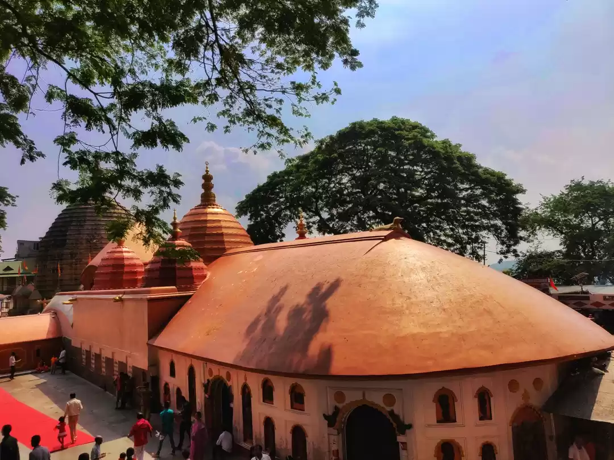
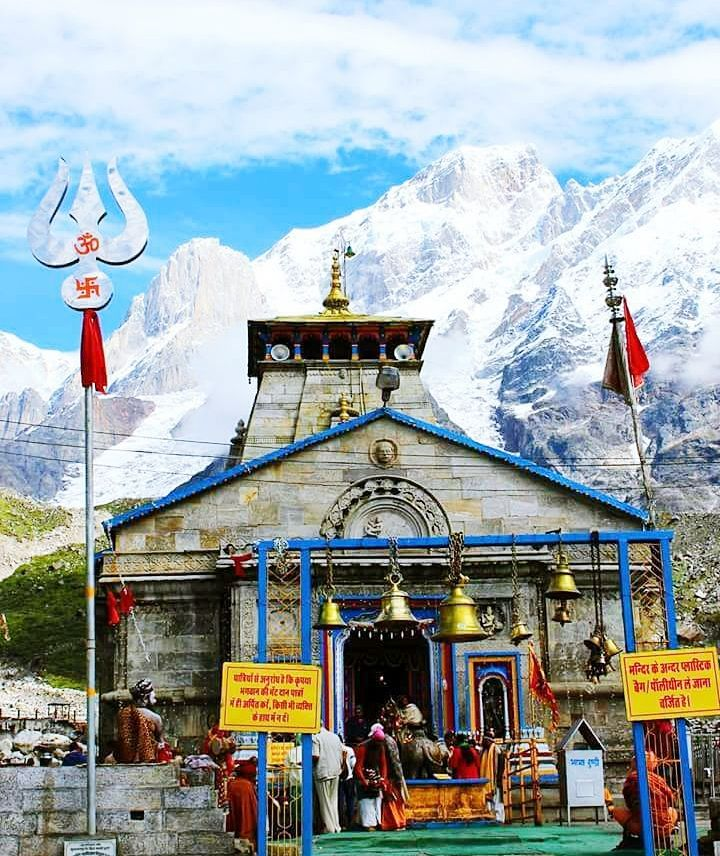
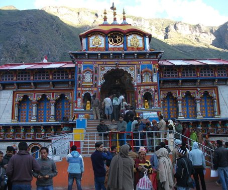

About Brahmanshi
(Dr. Sonal Shrivastava)
Brahmanshi is a transmitting Guru within the Himalayan Siddhashram Guru Parampara, carrying forward the living current of Paramhans Swami Nikhileshwaranand Ji under Guru-ādeśa.
Her life is anchored in Adhyatm (Himalayan Spirituality), Guru seva, sādhana, and continuity of lineage — lived not in isolation from the world, but within it.
She received Sanyaas Diksha and received her sanyas name Brahmanshi by her Guruji Paramhans Swami Nikhileshwaranandji. This is not a path adopted later in life. It is a continuity from birth.
Birth in the City of Mahākāleśhwar
Brahmanshi was born and brought up in Ujjain — the sacred city of Mahākāleśhwar Bhagwān, one of the twelve Jyotirlingas. Mahākāl was the center of her upbringing.
In her family, every achievement, examination, joy, and milestone was first placed at the feet of Shri Mahākāleśhwar before any worldly celebration followed. Gratitude preceded expression. Offering preceded celebration.
From childhood, she entered the garbhagṛha of Mahākāleśhwar. During earlier years when temple access allowed close proximity, she performed abhiṣeka with her own hands numerous times.
She sat within the sanctum for extended periods in japa and dhyāna — undisturbed, absorbed in silence before the Jyotirlinga. The vibration of the garbhagṛha — the stillness, density, and immediacy of presence — became formative impressions in her inner life. This foundation of Mahakaleshwar temple immersion shaped her orientation to Adhyatm and sādhana from the beginning.

From Mahākāl to Devbhūmi
Life unfolded from Ujjain toward the Himalayas — Devbhūmi, the land sanctified by tapas and Rishi tradition.
She regularly undertakes sādhana in these regions — sitting beside the Ganga, engaging in mantra japa, silent meditation, and disciplined observance. The Himalayas represent silence, austerity, and vertical ascent of awareness. Mahākāl anchored her foundation. The Himalayas deepened her inward journey.
Kashi and the Flow of Consciousness
Varanasi, the city of Vishwanāth, holds deep spiritual resonance in her life. The current of Shiva as cosmic witness is encountered there as living presence. Time and transcendence meet in Kashi, and her contemplative engagement with Vishwanāth and the Ganga has been part of her sustained practice.
Kamakhyā and Nīlācala Sādhana
At Kamakhyā in Nīlācala, her engagement extended beyond darśan. Kamakhyā is a Tantric śakti kṣetra of intensity and depth. Her time there included disciplined sādhana within the boundaries and containment of tradition. These were periods of focused inner work, not casual visitation.
The śakti fields of Bharat — Vindhyāchal, Rāmeśhwaram, Padmanābhaswāmi Temple, Kanyakumari, Vrindāvan, Omkareshwar, Dakshineshwar Kāli Mandir, Ramakrishna Math, Nathdwara — have been entered by her as spaces of contemplative engagement and structured practice. Her movement across India has been as a part of her sādhana and upasana.
Śrī Vidyā and Structured Discipline
Her sādhana orientation includes structured Śrī Vidyā Krāmik Dīkṣā progression — grounded in mantra, yantra, and disciplined ritual practice.
Transmission is approached with containment, secrecy where required, and respect for lineage protocols.
The aim is not accumulation of methods. It is refinement of the instrument.
Continuity Through Guru-Ādeśa
The work she undertakes is rooted in Guru-kripā and Guru-ādeśa. She received Guru Adesh from her revered Guru Paramhans Swami Nikhileshwaranandji to carry forward his Gyan and Karya.
She stands within the Siddhashram Guru Parampara as transmitter — not as founder of a new identity or work, but as continuation of living lineage.
The Guru-Mandal operates through the chosen Shishyas who are given Adesh to become Guru and transmit sadhana gyan. Transmission is sustained by the entire Parampara field.
Gṛhastha and Sādhaka
Brahmanshi is a Grahasth Sanyasi, lives as a gṛhastha while rooted in Sanyas and sādhana.
"Living life 200%, 100% as a Grahasth, a wife, a doctor and 100% as a Sanyast, a Sadhika, a Shishya, a Guru."
Professional Dharma
As Dr. Sonal Shrivastava, Senior Consultant and Super Specialist in Endocrinology, she fulfills her professional dharma consistently and responsibly. Patients are seen regularly. Medical service is carried out with discipline and compassion.
Integrated Tapas
Worldly responsibility is not abandoned for spiritual life. Both paths and their Dharma are integrated. Professional duty and spiritual tapas coexist without contradiction. Her life reflects balance — strength in action, depth in silence.
SĀDHANA WITHIN GṚHASTHA LIFE
The Path of Integration, Not Withdrawal
The Himalayan Siddhashram Guru Parampara does not demand escape from life. It demands depth of Adhyatm within it. This lineage affirms that spiritual realisation and worldly responsibility are not opposed. They can be integrated through Guru’s Gyan and Guru Kripa.
The Living Example of the Lineage
Paramhans Swami Nikhileshwaranand Ji, in his gṛhastha identity as Dr. Narayan Dutt Shrimali, demonstrated that intense Sādhana can coexist with worldly responsibility.
He taught not to abandon engagement with society to pursue spiritual attainment. He showed that tapas, mantra, and sadhana can unfold within the responsibilities of family and profession.
Dharma in action.
Sādhana in silence.
Strength in responsibility.
The Parampara carries this example forward.
Brahmanshi — Continuing the Same Path
Following her Guru’s footsteps, Brahmanshi lives as both:
- ● A practicing medical doctor and Super Specialist
- ● A dedicated Shishya and Sādhak
Her professional life is well segregated from her spiritual life. She fulfills her duty to patients with sincerity, while maintaining structured daily Sādhana under Guru-ādeśa. There is no contradiction between her clinic and her sadhana kaksha.
Spiritual Depth Without Escapism
Perform your responsibilities with integrity.
Maintain disciplined daily Sādhana.
Align conduct with Dharma. Refine awareness amidst activity.
Withdrawal from life is not superior to mastery within it. The battlefield of daily life becomes the ground of refinement.
For Householders, Professionals, and Seekers in the World
You are not excluded from Adhyatm and Sādhana. You are invited to elevate yourself while living in this same world.
The Parampara recognises that modern life carries responsibility. Discipline within responsibility develops steadiness far more than isolation without maturity.
The householder who practices sincerely becomes inwardly anchored while outwardly engaged.
Living Dharma Fully
Spiritual growth does not negate:
- Family.
- Career.
- Duty.
- Society.
It refines them.
When Sādhana deepens:
The Message of the Parampara
Do not abandon life.
Sanctify it.
Do not reject responsibility.
Stabilise within it.
Do not postpone Sādhana.
Begin now — where you stand.
The same path walked by Guruji. Through discipline. Through steadiness. Through integration.
Brahmanshi, walking in the footsteps of her Guru, guides seekers toward this integrated path.
A path where Sādhana strengthens life. Life becomes the field of Sādhana.
Where sadhana is not escape, it is expansion with elevation.
HER SACRED GEOGRAPHY
"These are not destinations for the traveler, but fields of alchemy. Each site is a focal point of cosmic resonance, mapped not by latitude, but by the levels of infinite presence."
Ujjain – Mahākāleśhwar
The navel of the earth and the center of time. Kal, the first bond of the image and the field of the Mahakal. Here the transcendence of temporal decay Sādhana of the Mahavidya currents starts, the primordial face where the seeker dissolves the illusion of duration.
- The Navel point of Earth
- Field of Mahakal
Kamakhyā – Nīlācala
The womb of creation upon the blue hills of Nilacala. The field here is pure, tangible. This is the seat of Tantric depth where the practitioner seeks to transform awareness into the nectar of awareness in the geometry of absolute receptivity.


Kāshi –
Vishwanāth
"The luminosity of light in Kashi, the geography is secondary to the resonance of spiritual transmission. Every stone is a mantra, every wave of the Ganga a current of transcendence. Here one does not live, one is lived by the infinite."
VINDHYACHAL
The quiet pulse of the middle mountain. A field of unwavering Devi presence that guards the gateway to the deep interior. Maharani Tripurasundari visibility through the unmoving, the pulse that runs through all of life.
DEVBHŪMI
The Himalayan Fields of Tapas
Kedarnath
The peaks of the white mountain where the mountain itself is Mantra. Field of severe tapas and absolute surrender.

Badrinath
The field of preservation and deep silence. The seat of the eternal Narayan at the base of the Himalayas.

Gangotri
The descent of light, where the cosmic river touches the earth. Sādhana at the origin of transmission.
Rishikesh
Field of learning and refined intellect. The gateway to the hills where the Ganga first meets the world.
- Learning
- Clarity
Haridwar
Integration at the threshold. The river joins the planes, bringing the Himalayan energy to the world.
Other Sādhana Fields
Undisclosed locations preserved through Maryada for intensive lineage transmission.
Beyond Geography
"The physical fields are set up but projections of your internal landscape. To walk the field of the Himalayan is to scale the height of your own breath. To bathe in the Ganga is to clarify the current of your own vision. The true pilgrimage always begins within."